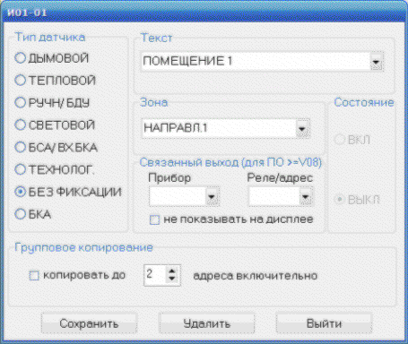

Программа ОмегаКонфигуратор предназначена для создания, редактирования и записи текстовой информации в прибор ПУ-П системы адресной пожарной сигнализации "Омега". Программа работает под ОС Windows XP, Windows 7,8,10
Для установки, на целевой компьютер, необходимо распаковать архивный файл OmegaConfig_VX_XX.zip c диска CD-ROM, входящего в комплект поставки. После распаковки на компьютере пользователя создается папка OmegaConfig c исполняемым файлом OmegaConfig_VX_XX.exe, где VX_XX текущая версия ПО. Программное обеспечение работает под управлением ОС Windows XP,7,8,10.
Подключите прибор ПУ-П системы адресной пожарной сигнализации "Омега" к компьютеру при помощи кабеля, входящего в комплект поставки. Включите прибор ПУ-П. Система Windows запустит мастер установки нового оборудования и предложит установить драйвер автоматически.
| Откажитесь от автоматической установки драйвера |
Для нормального функционирования программы, USB-драйвер (FTDI) необходимо установить с диска, поставляемого с оборудованием или скачать с сайта https://www.ftdichip.com/FTDrivers.htm.
| Если не будет уcтановлен или будет установлен неправильно драйвер FTDI, то Windows установит свой драйвер USB-порта, который с программой ОмегаКонфигуратор будет работать некорректно |
После установки драйвера, в Мой компьютер/Просмотр сведений о системе/Свойства/ Оборудование/Диспетчер устройств/Порты(COM и LPT)/ проверьте появление записи типа USB Serial port (COM n). Программа ОмегаКонфигуратор обслуживает порты n=1..10. Если номер порта больше 10, то его необходимо принудительно изменить (правая кнопка "мыши", пункт меню/Свойства/, вкладка /Параметры порта/Дополнительно/ ).
Программа ОмегаКонфигуратор на экране монитора состоит из четырех основных панелей:
Рабочая панель состоит из вкладок Сигнализация, Релейные сценарии и Пожаротушение. Внешний вид окна программы показан на рисунке.
Для создания новой конфигурации необходимо, после запуска программы, выбрать пункт меню Режим/Создать конфигурацию или нажать клавишу F4 или нажать кнопку на панели быстрого доступа. Создание конфигурации производится в слeдующей последовательности.
|
В адресной пожарной сигнализации "Омега" принята следующая система маркировки извещателей:
Иpl-nn , где p - адрес прибора 0-ПУ, 1-ППКП1, 2-ППКП2....8-ППКП8 l - номер петли в приборе от 1 до 8 nn - адрес устройства в адресной петле |
На дисплей выводится окно редактирования текста.
В панели ТЕКСТ вводится текст сообщения для данного извещателя. Текст сообщения ограничен 20 знаками и будет отображаться вместе с зоной на индикаторe прибора ПУ-П. Если сообщение не введено, то на индикаторе прибора ПУ-П будет отображаться сообщение ЛИНИЯ ХХ ДАТЧИК ХХ, при этом выбранные зона и тип извещателя игнорируются. В панели ТИП ДАТЧИКА выбирается тип извещателя.
|  |
В панели ЗОНА выбирается зона к которой относится извещатель. Состояние датчика ВКЛ/ВЫКЛ для новой конфигурации всегда установлено в положение ВЫКЛ. Для облегчения ввода однотипных извещателей(например при заполнении одного большего помещения) можно воспользоваться функцией групового копирования. Для этого в соответсвующей панели необходимо выбрать конечный адрес и разрешить копирование. После сохранения все извещатели от текущего до конечного будут иметь одинаковый текст и отнесены к выбранной зоне. Для сохранения введеных данных необходимо нажать кнопку [Сохранить]. Данные должны появиться в соответствующей строке панели TEKCT.
Для редактирования необходимо загрузить конфигурацию (файл
с расширением .cnf) при помощи пункта меню Режим/Открыть конфигурацию
или нажать клавишу F2 или нажать кнопку
на панели быстрого доступа.
При редактировании конфигурации допускается:
| Если изменяется текст зоны, то все извещатели, которые относились к ней необходимо повторно "привязать" к изменившейся зоне. |
Работа с текстами в панелях ЗОНА и ТЕКСТ и с окном редактирования описана в разделе Создание новой конфигурации.
Система адресной пожарной сигнализации "ОМЕГА" включает в себя подсистему исполнительных устройств ("сухих" контактов реле,электронных ключей и т.п). Физически исполнительные устройства(выходы) могут находится в приборах ПУ-П, ППКП, БРВУ, БКА. Для управления выходами используется механизм релейных сценариев. Система поддерживает до 96 сценариев по 10 шагов в каждом.
| Для приборов ПУ/ПУ-ПТ с версией ПО V11b и выше, количество сценариев увеличено до 128 |
От обычного управления выходами, релейный сценарий отличается возможностью запускать срабатывание цепочки выходов. Например, при срабатывании двух извешателей в зоне 4 ЭТАЖ необходимо:
На одно и тоже событие может быть задействованы несколько сценариев, они будут выполняться параллельно. Если необходимо задействовать больше 10 шагов, то из сценария можно запустить другой сценарий. Любой выход может быть задействовован в нескольких сценариях.
Для работы в данном режиме необходимо открыть вкладку Релейные сценарии. Внешний вид панелей показан на рисунке.
В таблице Список сценариев при помощи клавиатуры (клавиши Tab, стрелки вверх/вниз,Enter) или курсора и левой кнопки "мыши" выбрать требуемый сценарий.
Для сценария можно выбрать один из нижеследующих режимов
| Фактически это режим ПО ЗАПРОСУ, название ТУШЕНИЕ выбрано для того, чтобы обратить внимание на то, что данный сценарий задействован в алгоритмах пожаротушения |
| Если для одной и той же зоны в разных сценариях выбраны условия 2ПОЖ. В ЗОНЕ и 2ПОЖ. В ЗОНЕ*, то приоритет отдается условию 2ПОЖ.В ЗОНЕ* |
| Данный режим можно применять для реализации логики: сработка одного автоматического извещателя на этаже и любого ручного на пути эвакуации |
Сценарий может содержать от 1 до 10 шагов. В каждом шаге необходимо выбрать устройство(прибор), которое содержит выход. В сценариях доступны следующие виды выходных устройств:
| БКА01 означает, что выбран БКА подключенный к 1 линии прибора ПУ, БКА27 - подключен к 7 линии прибора ППКП2 |
| Номер запускаемого сценария не должен совпадать с текущим. Текущий сценарий можно заблокировать, чтобы гарантировать однократный запуск. |
Далее необходимо выбрать номер реле в приборе для ПУ/ППКП/БРВУ, или адрес для БКА, или номер для СЦЕН./ВНЕШН. и тип воздействия ВКЛ/ВЫКЛ (замкнуть контакт/разомкнуть контакт или запустить/блокировать сценарий), а также временную задержку перед исполнением текущего шага.
В окне примечания можно записать пояснения, памятки и т.п. Они будут сохранены в файле конфигурации. Для сохранения созданного сценария необходимо нажать кнопку Сохранить.
Начиная с версии V5.06 можно для каждого релейного выхода записать, сохранить в файле конфигурации и распечатать описание выполняемой функции, например включение вентиляции, открытие клапана дымоудаления, включение табло и т.п. Для этого, в столбце приборов выделить двойным "кликом" требуемый релейный выход (на рисунке обведено красной линией).
В окне редактировния ввести описание функции выбранного релейного выхода и нажать кнопку OK.
| Описание релейного выхода распостраняется на все сценарии, в которых задействован данный |
Для удаление ранее введенного описания необходимо очистить окно редактирования от текста и нажать кнопку OK.
В системе адресной пожарной сигнализации "ОМЕГА" для работы с выходами ("сухих" контактов реле,электронных ключей и т.п)
в дополнение к релейным сценариям предусмотрен механизм "связанных выходов". Механизм "связанных выходов" предусматривает
возможность "связать" любой извещатель c любым выходом системы "Омега", т.е с любым реле ПУ/ППКП/БРВУ, БКА, сценарием.
| В версиях ПО прибора ПУ ниже V11q, "связанные выходы" работали только с технологическими и ручными извещателями |
В примере приведенном ниже
первый вход БСА с адресом 01 "связывается" с выходом БКА с адресом 20. При переходе входа БСА01-01 в состояние ТРЕВОГА, замкнется выход БКА01-20 и на экране ЖКИ прибора ПУ в списке технологических тревог появится соответствующее сообщение, при переходе входа БСА01-01 в состояние НОРМА выход БКА01-20 разомкнется и сообщение удалится из списка технологических тревог. Если состояние входа индицируется на светодиодном индикаторе, например прибора индикации и управления ПИУ, то выбрав пункт НЕ ПОКАЗЫВАТЬ НА ДИСПЛЕЕ сообщение не будет выводится на ЖКИ индикатор прибора ПУ.
| Если вход без фиксации при переходе в состояние ТРЕВОГА запускает сценарий, то после возврата в состояние НОРМА никаких действий не производиться |
В системе адресной пожарной сигнализации "ОМЕГА" релейные сценарии и "связанные" выходы позволяют реализовать практически любые алгоритмы управления техническими средствами.
Система адресной пожарной сигнализации "ОМЕГА" может поддерживать до 8 направлений пожаротушения.
| Каждое направление пожаротушения обязательно должно быть оснащено зональным блоком дистанционного управления(БДУ). |
|
Прибор ПУ-П не поддерживает систему пожаротушения.
Прибор ПУ-ПТ штатно поддерживает два направления пожаротушения. Прибор ПУ-П с прошивкой ПТ, совместно с двуми приборами БРИТ, поддерживает до восьми направлений пожаротушения |
Для работы в данном режиме необходимо открыть вкладку Пожаротушение Внешний вид панелей показан на рисунке.
Для настройки направления необходимо:
| Хотя бы одно реле БДУ должно находиться в режиме ПУСК1 |
| Хотя бы одно реле БДУ должно находиться в режиме ТАБЛО(ОПОВЕЩЕНИЕ) |
Для записи конфигурации из компьютера в прибор ПУ-П системы "Омега" необходимо:
| Прибор ПУ-П должен быть выключен |
Для чтения конфигурации из прибора ПУ-П системы "Омега" в компьютер необходимо:
| Прибор ПУ-П должен быть выключен |
Для записи конфигурации с компьютера в прибор ПУ-П системы "ОМЕГА" через SD-карту необходимо:
| Прибор ПУ-П поддерживает работу с SD-картами емкостью не более 32 Гб. Карта должна быть отформатированна под файловую систему FAT32. Имя файла конфигурации должно быть CONFIG.BIN и располагаться в корне карты |
Для чтения конфигурации с прибора ПУ-П системы "ОМЕГА" в компьютер через SD-карту необходимо:
| Прибор ПУ-П поддерживает работу с SD-картами емкостью не более 32 Гб. Карта должна быть отформатированна под файловую систему FAT32. В корне обязательно должен присутствовать файл CONFIG.BIN с любой конфигурацией. Прибор ПУ-П использует этот файл в виде шаблона и перепишет в него свою конфигурацию |
Для распечатки конфигурурации необходимо выбрать пункта меню Сервис/Печать или нажать клавишу Ctrl+P или нажать кнопку на панели быстрого доступа. Пример распечатки конфигурации приведен на рисунке
ЧП «РЕЗЕРВ-1», Украина, 61157, г. Харьков, ул. Москалевская, 99, В2
тел./факс: +38(057)703-21-57, (067)5781809, Попов Григорий Павлович, директор
телефоны тех. поддержки: +38 (057)7032158, (097)7836031
e-mail:rezerv-1@ukr.net
http://rezerv-1.com/